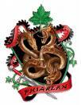
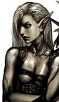

Week 25 - An old-fashioned bar fight; or, The long arm of the Law.
It is dark by the time our heroes bring their captives into the local Watch custody house. The two elven cat-burglars are sullenly silent. Constable Tool decides not to lean on them, and arranges a lawyer from House Phiarlan to attend.
Flash has returned from Diamond Lake, and meets up with the party at the Watch House. Not being one to play things by the book, Flash tries to detect the thoughts of the two captives, before the lawyer detects his spell. With the lawyer there, they are not going to get away with anything…
In questioning, the burglars claim they do not know where Starshine is, or who hired her. They were looking for a Xen’drik artefact in the shape of a horn, which Starshine probably grabbed while the party was delayed by dagger-wielding antics of the captives.
The tried and true method of lurking around in establishments of ill-repute does not help either – there are way too many of them. One barkeep near the waterfront reckons Starshine is a more middle-class thief, and hangs out in the Dura. That information cost a pretty penny.
Leaving the captives at the mercy of the custody constable does not help either, resulting in a black eye for him. Finally the party arrange a transfer to another facility after the lawyer leaves. Weakening their resolve with a magic fog, Flash casts Detect Thoughts again.
This time Flash gets somewhere with his mind reading, but only images arise. The party lead them along, discussing the likely hiding place of the captives’ employer. Flash discerns an image of a tavern in a tower with a placard painted in flames hanging outside. Knowing this must be the Burning Buttress, the party lock up the captives and head for Middle Dura.
 The tavern quietens as the party enter. Jericho heads straight for the bar, while Constable Tool’s head is turned by some comely female elves in the corner. Hang on a moment, thinks Flash, following his eye… Flash has recognised one of the elves from his mind-reading earlier, and she seems to have recognised them!
And then it’s on as Starshine makes a break for the balcony! Her accomplice tips a table over and covers her boss’s retreat. Angry patrons jump to their feet and a brawl ensues. Gauthakan sprints over there but can’t stop Starshine tumbling past. Constable Tools works out where she’s going and heads to intercept. Arns finds himself distracted by some angry patrons, but Flash has done a good job to quell things with a Whelm spell which knocks out a lotta lights.
The accomplice hurls a dagger at Constable Tool as he accosts Starshine, but his grip is fast. Not even the barstool smashing over his head from across the room can distract our lawforged from his duty. Jericho hopes he didn’t see who threw it…
Gauthakan is itching to crush bones with his hammer, and the dagger out is a good as an excuse as any for him to batter the accomplice to the ground. Luckily she had been affected by Flash’s spell, so she falls unconscious.
In this case, the long arm of the law is holding a sock full of ball bearings, and Starshine is rendered captive.
Arn is saved from having to disembowel an angry elf when Constable Tool announces there is nothing to see here… nothing at all. The would-be brawlers back off and calm is restored.
Jericho quickly rifles though the pockets of their captives, finding more burglar gear, and a large pouch containing a carved ivory horn with a metal mouthpiece. He resists the urge to blow it, later finding out from Flash that it is a Horn of Blasting.
The barkeep makes rooms available upstairs for the unconscious and the wounded, while Starshine is subjected to unlawful interrogation. Flash is eager to use Dominate to hold Starshine in thrall to his will [insert evil laugh here].
In a flat voice, Starshine tells them that she lifted the horn at the urgent request earlier that day of an unidentified gentleman. She is due to hand over the item tomorrow, in the Commons garden area of Morgrave University…